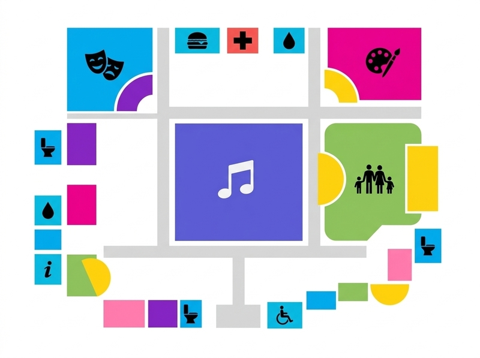

Los Viajeros
Escenario: Central
Horario: -
Fecha: 14 al 16 de Noviembre
Ubicación: Centro de Eventos Pedregal
Horario: 10:00 h a 23:00 h
Escenario: Central
Horario: -
Escenario: Teatro
Horario: -
Hora:
Hora:
